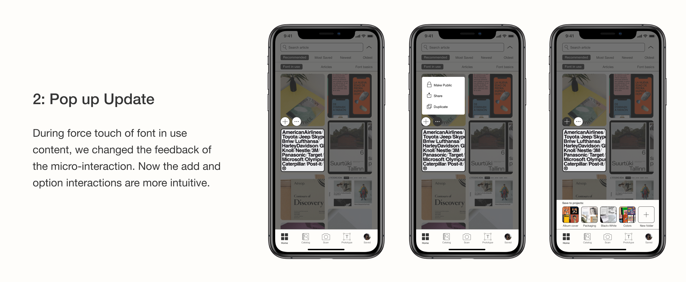

Background
This project began with our teams' passion for typography and my observations in the typography design community. The application was developed through 7 weeks in a senior interface design class.
Tools
Illustrator, Figma, Sketch, ProtoPie, Origami, Whiteboard & Marker
There are large communities of typography enthusiasts who are active online and who are constantly seeking out inspiration for their next design. They browse on traditional web based sites like TypeWolf, Google/Adobe fonts while a community of type enthusiasts resides on Reddit. On Reddit's typography community (/r/typography/, r/identifythisfont), people reach out to seek the source of a certain font or gain to feedback on a custom typeface they made.
While there are lots of different platforms to seek out typography inspirations for example Pinterest, Reddit, and FontsInUse; And font selection tools like Google Fonts and Adobe Fonts. Users often have to switch from application to application throughout their workflow. There is not a single platform dedicated to streamlining a user's typography workflow from exploration to experimentation. Through a little background research we saw a demand for a tool that can make this happen.

To help us gain a better understanding of the habits of a typography hobbyist to an expert typographer, we conducted primary research using a survey with a series of multiple choice and short answer questions posted on Reddit.com. (Design and Typography subreddits) I made the questionnaire as well as distributing the survey as I am a frequent Reddit user.
We found that most of our survey respondents were young, as the results were restricted by the demographics of Reddit. We reinforced our findings by doing the survey through an interview format on faculty.
Based on the data collected through our background research, we created two findings.
Our results indicate that younger respondents gravitate towards image-based online platforms such as Behance, Dribbble, Pinterest, Instagram to browse for inspiration and start their typography process while older respondents get inspiration from text-based content and experiences in real life. We also tested our assumption that a majority of our respondents browse for inspiration through their mobile device during their commute if they are not driving.
Through further questions regarding the workflow, a majority of respondents felt extremely frustrated when they cannot find the font they are looking for. As a result, they have to settle for the second best option and some respondents even make their own font instead.
We want to leverage users existing mental models of applications they already use. This lowers their cognitive load while using a completely new application. A list of current applications and tools typography enthusiasts use is made to help us design a familiar interface.
Features should not live in silos, instead, every feature should be designed with cohesion and be mindful of the users end to end workflow.
New typographers can learn and build on their skill while expert enthusiasts can use more functionality. All levels of expertise in typography are welcome.
We began by sketching out the landscape of the application and features which were used in the users current workflow. I lead the design strategy and communicated Type's vision to the sketches and wireframes. On the left is a diagram of our anticipated brainstormed features.
After our whiteboard session, we ended up with 4 main features that align with our guiding principles. Over the span of 4 days, we started making graybox wireframes for these features:
Area for education and inspiration; feed + article feature allows users to search for new articles about typography as well as how types live in the design
My design decision here was to use existing image based platforms as inspiration. Type users would know the interactions and UI flows based on their experience. The feed was inspired by Behance and Pinterest while the articles were inspired by Medium though all of Types content is related to typography.
The catalog feature helps users to identify fonts by uploading a design, or by taking a photo. In addition to font identification, the catalog is a repository of fonts in the app.
Design decision: I used Adobe fonts and Google fonts as my base knowing all my users have used at least one of those applications in the past. I applied my principle of flexibility to display information like a type bio and popular pairings to beginner users. The options start out as all closed as I knew different users have different workflows, I want the user to access what they want without having to scroll through.
Enthusiasts who want to test out what their fonts look like could use the prototype feature to quickly see their pairings and fonts in different scenarios.
The prototype feature was a challenge to design as it displays the most complexity in features. To begin, I understood and researched the users workflow, some of the things they tested were font pairings, colors, and text details.(ex.size, kerning, spacing) I wanted the prototype feature to have as little as possible while still achieving their prototyping goals. Design Inspiration: Google Snapseed, mobile drawing applications

People can create an inspiration board to save fonts, articles, prototypes and font in use pictures in the app. It allows for private folders for work sensitive projects.
To move from feature to feature, we allow users to save content and add it to a folder for a later time. Design Inspiration: Instagram, Google Drive, Dropbox
After a week sprint on brainstorming and graybox wireframing the proposed application, we presented it with some feedback for our next design phase. Initially, we had the camera(scan) feature in the catalog, through feedback from an industry critique, we decided that it would live as its own feature.
In the design phase, I shared the responsibility of designing the interface with a teammate. Additionally, I performed quality checks of the screens throughout the design process. I assessed the interface to see whether it aligns with our design and project goals.
When the screens were completed, I was responsible for making all the prototypes and interactions.
Here is a link to the solution and to the prototypes I created.


This an interaction of enlarging the font size in the prototype feature. In the menu, I chose to hide the expandable menu due to the limited screen size. Text details for example kerning, leading and alignment are displayed one at a time and controlled through a swipe or selection on the text button. The reason for this design was to not overload the user with information.
By understanding the users typography testing habits, I am able to design a template feature where users can drag out dummy text to see what the font looks like. This saves users time when they want to compare fonts.
For the user tests I brainstormed what functions and sequence of tasks to test. The validation of our core layout and its similarities with existing image based applications was important. The testing tasks were designed for the audience to flow from feature to feature in order to see if they understood the application architecture.
The testers appreciated how the app focuses on typography. Through observation of how the testers completed the required tasks, I could see that there wasn't a lot of struggle while navigating through multiple features. This is probably due to the close resemblance with inspiration application.
Participants found that the flow from browsing through the feed to looking at the font in the catalog is a convenient resource in their typography workflow. Additionally, our participants expressed that since typography inspirations can come at any time of the day, the mobility of our application helps to streamline the steps of discovery to rapid prototyping. During the test, the prototype feature was not tested but it was explained and a demo was shown due to the limitations of a prototype.
3 out of 8 participants found that the filter buttons on the Catalog were too small and confusing. Additionally, font inclusion in the saved project does not sit well with the rest of the content. 3 testers found that inconsistent vocabulary hindered them from exploring the app to its fullest extent.
These are a few of our many iterations. These changes below are specifically made to address the results of user test.
Type is an application filled with features. At the time of inception, our team concluded that each feature (scan, feed, catalog, prototype, profile) would benefit the user each in its own way and as a whole. Though that statement holds true, building the application with ample features ,in reality, would not be feasible in a small software development team. Thinking in the shoes of a product manager, I would build the main features while leaving secondary features on the backlog until a further time.
Due to the constraints of the prototype during user testing, the prototype feature could not be properly tested. Through further reflection, I personally would fully remove the prototype feature from the current application.
Reasons being:
Lastly, if the opportunity for future development presents itself, I would like to explore the onboarding process to minimize user frustrations.
Fin. Thanks for making it this far :) I welcome you to check out all the features and prototypes I made on this page.